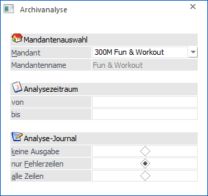
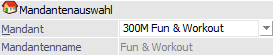
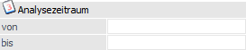
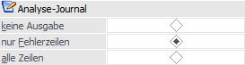
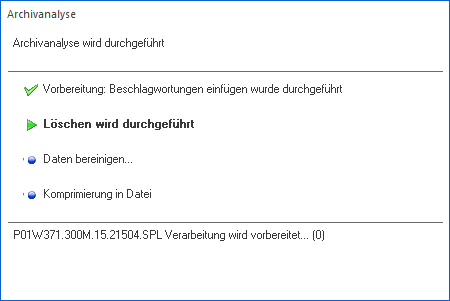

Voraussetzung, dass archivierte Dokumente schnell wiedergefunden werden können, ist, dass Archiveinträge eine Beschlagwortung aufweisen. Anhand dieser Zuordnungen (Schlagwörter mit Inhalt) kann gezielt nach Archiveinträgen gesucht werden.
Bei externen Archiveinträgen findet die Beschlagwortung in der Regel manuell statt, bei internen Archiveinträgen (z.B. WinLine FAKT-Belege) automatisch. Für die Automatik wird im Vorfeld definiert, welche Elemente eines Ausdrucks als Beschlagwortung genutzt werden sollen. Nach dem Druck des z.B. WinLine FAKT-Belegs wird zu einem gewissen Zeitpunkt das entstandene Archivdokument analysiert, d.h. es wird geprüft, ob bzw. welche Elemente im Druck vorkommen und die Beschlagwortung gebildet.
Dieser Arbeitsschritt kann immer sofort stattfinden (bei der Archivierung) oder zu einem späteren Zeitpunkt über die Analyse, welche im Menüpunkt…
1 WinLine ADMIN
1 Archiv
1 Analyse
… zu finden ist, erfolgen.
Hinweis
Der manuelle Start der Analyse kann auch in der WinLine START (Abschluss - Archivanalyse) initiiert werden.

Mandantenauswahl

Ø Mandant
An dieser Stelle wird aus der Auswahlliste der gewünschte Mandant gewählt, für dessen Archiveinträge eine Analyse erfolgen soll. Dadurch wird in der nächsten Zeile der Mandantenname angezeigt.
Analysezeitraum

Ø von Datum / bis Datum
Hier kann der Zeitraum eingeschränkt werden, für den die Analyse durchgeführt werden soll. Wird keine Einschränkung vorgenommen, werden alle vorhandenen Dokumente analysiert
Analyse-Journal

Ø Journal
An dieser Stelle kann entschieden werden, in welcher Form das Analyse-Journal ausgegeben werden soll, welches bei Anwahl des Buttons "Ok" erzeugt wird. Dabei gibt es folgende Möglichkeiten:
ü keine Ausgabe
Es wird kein
Analyse-Journal ausgegeben.
ü nur Fehlerzeilen
Mit dieser
Option wird nur ein Protokoll aller Fehlermeldungen (wenn eine SPL-Datei nicht
mehr gefunden werden kann oder dergleichen) gedruckt.
ü alle Zeilen
Es werden alle
Meldungen ausgegeben.
Buttons

Ø Ok
Durch Drücken des Buttons "Ok" bzw. der Taste F5 wird die Analyse für alle noch nicht analysierten Dokumente des Mandanten gestartet, wobei ein eigenes Statusfenster angezeigt wird, welches den Fortgang der Analyse anzeigt.

Ø Ende
Durch Anwahl des Buttons "Ende" bzw. der Taste ESC wird das Fenster geschlossen.